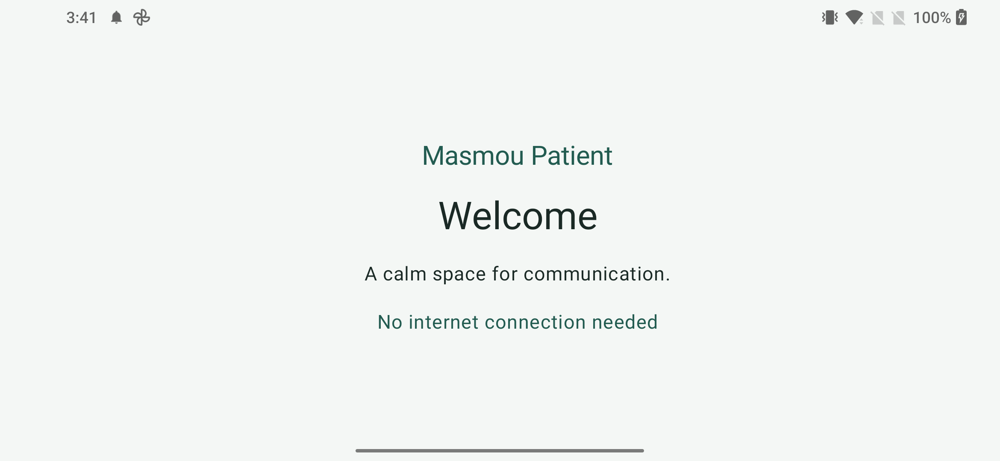

Android Foundation
Kotlin · Jetpack Compose · Material 3 · Gradle Kotlin DSL
ANDROID-FIRST · OFFLINE-FIRST
The current build, the next steps, and everything needed to continue Masmou Patient.
A calm launch screen with landscape orientation and Arabic / English resources. This foundation build does not yet include communication tools.
Build: 8a50de9a6262423fa972276b45b7c41cfb358f22
Merge: a8810eb2cd8c88486fd31c22e9ff3ae0dd2665f9
On a phone, use this computer’s LAN address instead of localhost.

THE PATH AHEAD
M0 is complete and merged. M1–M10 remain planned; no future milestone is included in this APK.
Kotlin · Jetpack Compose · Material 3 · Gradle Kotlin DSL
header/status · central canvas placeholder · large quick-action area · bottom tool area
finger/stylus drawing · black/blue/red/green · eraser · clear
Yes / No / Water / Pain / Toilet / Nurse / Family / Urgent · local Android TextToSpeech · Arabic/English phrases · typed text -> Speak
standard mode · low-vision mode · TalkBack semantics · larger UI
separate Android app · local patient/family profile foundation · connection placeholder · recent events UI
Patient -> Family BLE/local Bluetooth · connection state · versioned messages · reconnect
Room · bounded event history · timestamps · repeated-pain rule
full-screen/kiosk-friendly behavior · accidental exit reduction · lifecycle recovery · state restoration
tablet · phone · stylus if available · Arabic
A5-class device · ~250 g target · ~7–9 mm target · easy-grip retained stylus
A · Patient proofCommunication, drawing, quick needs, local speech, and accessibility.
B · Family connectionLocal Bluetooth, history, pain alerts, and reconnect reliability.
C · Usability evaluationReadability, fatigue, touch accuracy, and specialist evaluation.
D · Hardware proofOnly after the Android experience is validated.
E · Pilot batchAfter hardware validation and credible manufacturing estimates.
F · Commercial readinessIntended use, privacy, regulatory applicability, and manufacturing QA.
CONTINUE WITH CONTEXT
codex/m0-foundationM0 is complete. Start M1 only after a separate request and the agreed GitHub workflow.
The original handoff is preserved. Use the M0 implementation report for completed work and exact verification results.
JDK 17+, Android SDK 35, and a device or emulator for connected tests.
.\gradlew.bat :app-patient:assembleDebug
.\gradlew.bat :app-patient:lintDebug
.\gradlew.bat :app-patient:connectedDebugAndroidTestInitial dependency downloads need Internet. The installed application does not.
Build notes & lint advisories ↓